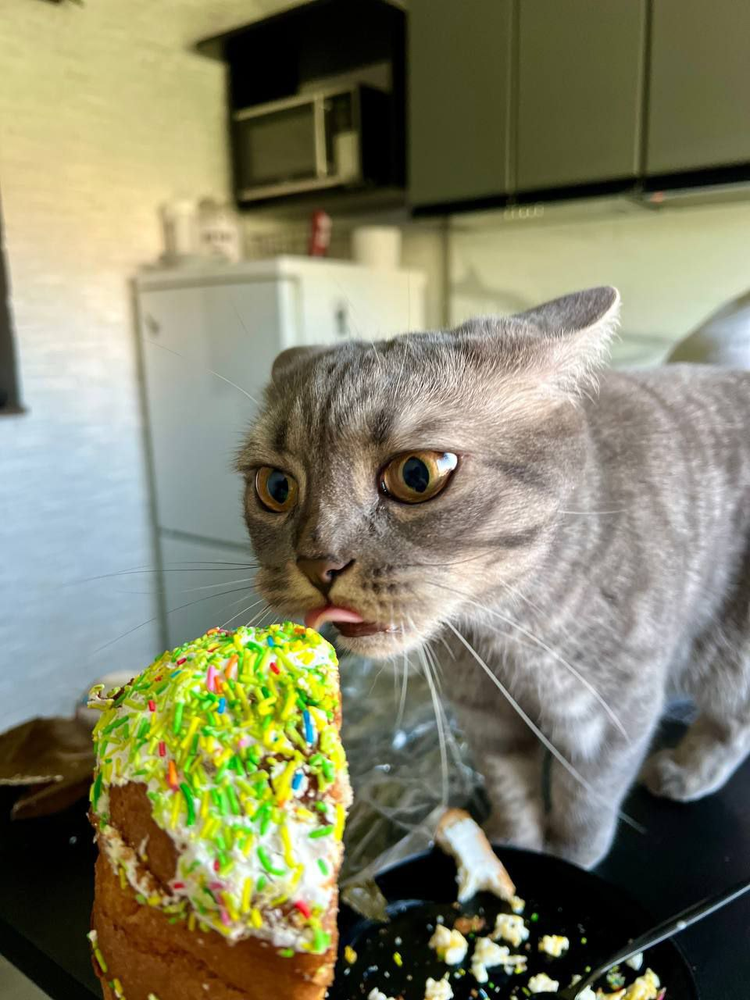

Від ремонту до тестування крок за кроком до розвитку
Я цікавлюся технологіями та постійно розвиваюся у сфері IT. Вмію працювати з комп'ютерами та ноутбуками: налаштовую, чиню та допомагаю віддалено через програми на кшталт AnyDesk. Зараз освоюю тестування програмного забезпечення та роблю перші кроки у створенні сайтів.
